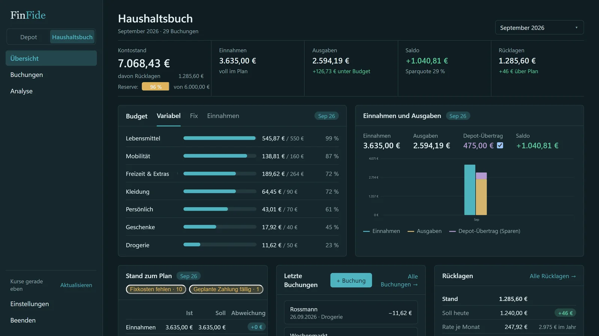
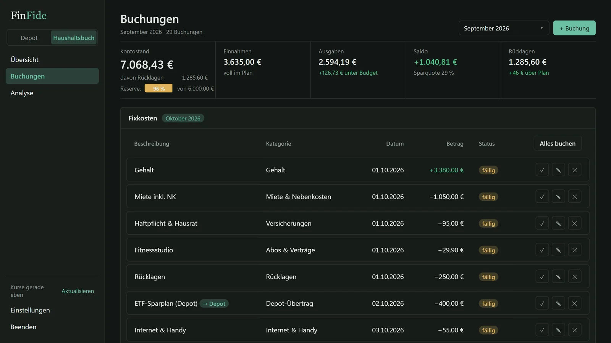
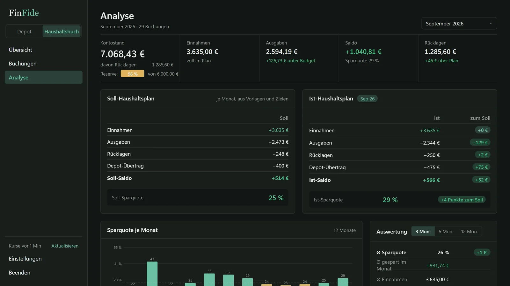
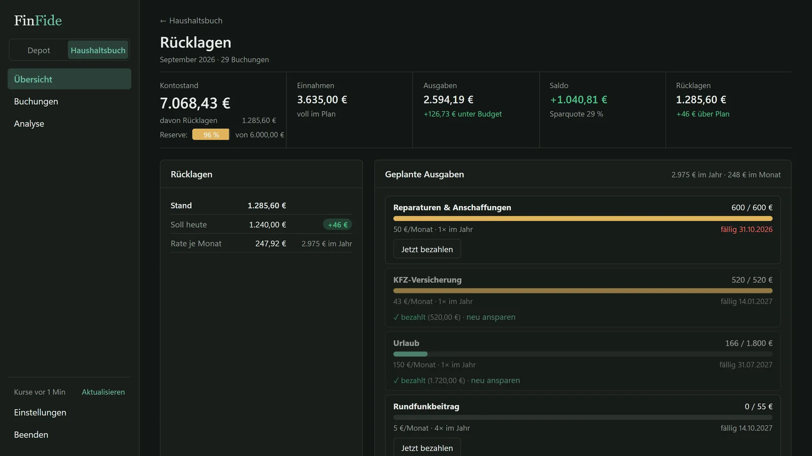
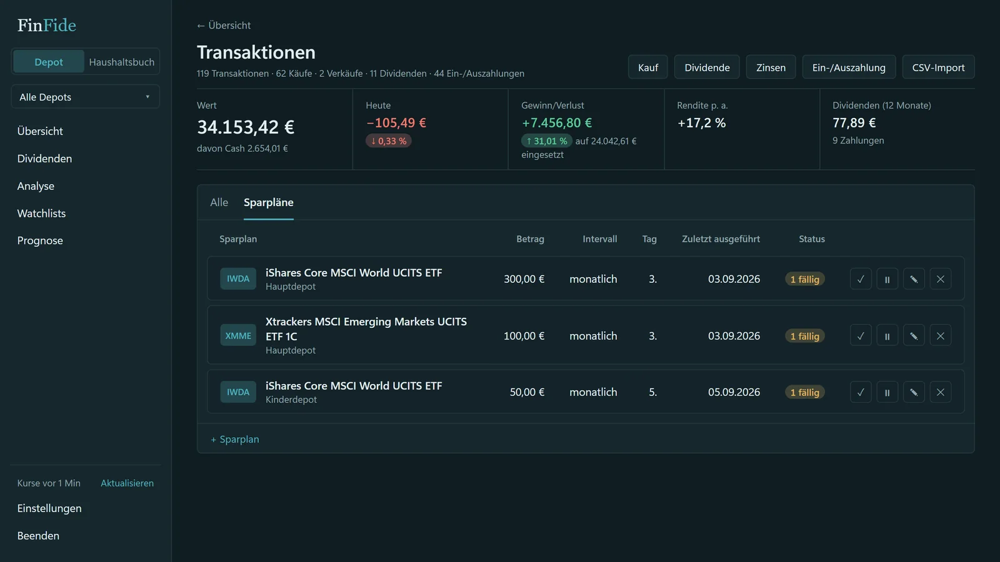

Haushaltsbuch für den PC – offline, ohne Bankverbindung.
Einnahmen und Ausgaben in Sekunden buchen, Budgets je Kategorie, Fixkosten mit einem Klick und Rücklagen für Jahresrechnungen. Alles lokal auf dem eigenen Rechner – ohne Konto, ohne Abo.
Das Haushaltsbuch ist Teil von FinFide – zusammen mit Depot-Tracker und Chartanalyse in einem Programm.

- Was
- Haushaltsbuch mit Budgets, Fixkosten, Rücklagen
- Erfassung
- von Hand oder per CSV-Import, keine Bankanbindung
- Daten
- lokal auf dem PC, keine Cloud
- System
- Windows 10 und 11
Der Monat auf einen Blick
Was reinkommt, was rausgeht, was übrig bleibt – und was davon ins Depot wandert.
- Buchungen in SekundenKategorie, Betrag, fertig – eigene Buchungsregeln als Gedächtnisstütze.
- Budgets je KategorieVariable Ausgaben, Fixkosten und Einnahmen getrennt; Überschreitungen fallen sofort auf.
- Fixkosten mit einem KlickWiederkehrende Posten stehen am Stichtag zur Buchung bereit.
- Rücklagen für JahresrechnungenVersicherung, Kfz, Reparaturen – monatlich zurückgelegt, fällig bezahlt.
- AuswertungSoll/Ist-Haushaltsplan, Sparquote, Durchschnitt über 3, 6 oder 12 Monate.


Jahresrechnungen ohne Überraschung
Große Zahlungen, die nur einmal im Jahr kommen, werden monatlich vorbereitet.
- Rücklagen je PostenVersicherung, Kfz, Rundfunkbeitrag – Stand, Soll heute und Rate je Monat.
- Fällige Zahlung bezahlenBeim Fälligkeitstermin wird die Rücklage mit einem Klick gegen die Buchung ausgeglichen.
- Reserve im BlickDer Kontostand zeigt, wie viel davon bereits gebunden ist.

Sparrate: vom Haushaltsbuch ins Depot
Konsumgeld und Anlagekapital bleiben getrennt, aber nicht getrennt gepflegt.
- Eine Buchung, zwei WirkungenDie Sparrate wird im Haushaltsbuch gebucht und landet mit derselben Buchung im Depot.
- SparpläneFällige Raten werden gesammelt bestätigt.
- ExportAuswertungen als Excel-Mappe.

Häufige Fragen zum Haushaltsbuch.
Muss ein Bankkonto verknüpft werden?
Nein. Buchungen werden von Hand erfasst oder per CSV-Import aus dem Broker-Export eingelesen. Es gibt bewusst keine Bankanbindung.
Werden Finanzdaten in die Cloud hochgeladen?
Nein. Alle Daten bleiben auf dem eigenen Rechner – kein Konto, kein Cloud-Sync, kein Server. Kurse werden anonym über öffentliche Schnittstellen abgerufen, ohne Bezug zum Depot.
Welche Broker-Exporte lassen sich einlesen?
FinFide liest CSV-Exporte per Import mit Zuordnung der Spalten ein. Welche Formate zum eigenen Broker passen, steht in der Anleitung; ansonsten werden Buchungen von Hand erfasst.
Gibt es ein Abo oder laufende Kosten?
Nein. FinFide ist ein Einmalkauf. Das gekaufte Programm läuft dauerhaft weiter, auch wenn die Entwicklung einmal pausiert. Updates sind für Käufer ohne Aufpreis.
Auf welchen Systemen läuft FinFide?
Auf Windows 10 und Windows 11. Eine Mac- oder Linux-Version ist nicht geplant.